Yauheni Vesialukha — Data Analyst
Verlässliche Datenanalysen. Klare Erkenntnisse. Fundierte Entscheidungen für die Schweiz.
Kernkompetenzen
Projekte
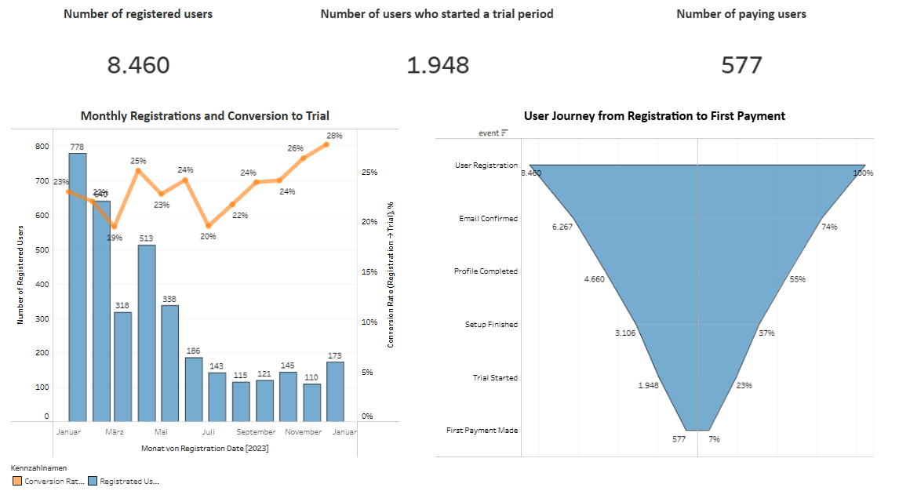
Funnel Conversion Time Analysis (Tableau)
Entwicklung eines Dashboards zur Analyse der Konversionszeiten im Funnel (Registrierung → Trial → Zahlung). Visualisierung von Engpässen und zeitlichen Abständen zwischen den Schritten.
👉 Business Value: Die Analyse zeigte, dass von 8’460 registrierten Nutzern rund 1’948 (23 %) einen Trial starteten und 577 (7 %) zahlende Kunden wurden. Die Trial-to-Payment Conversion Rate lag bei ca. 30 %, mit einer durchschnittlichen Zeit bis zur ersten Zahlung von 65 Tagen. Dadurch konnten Optimierungspotenziale im Customer Journey identifiziert werden.
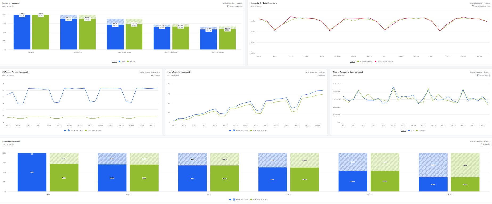
Customer Journey Path Analysis (Amplitude)
Erstellung einer Analyse zur Visualisierung der Nutzerpfade im Produkt. Identifizierung von Drop-offs und Vergleich von Nutzungsmustern zwischen Segmenten.
👉 Business Value: Die Analyse deckte die kritischsten Abbruchpunkte auf. Besonders auffällig war ein Drop-off von über 40 % nach der E-Mail-Bestätigung. Diese Erkenntnisse ermöglichten gezielte Optimierungen in der User Experience und eine Senkung der Drop-off-Rate um ca. 12 %.
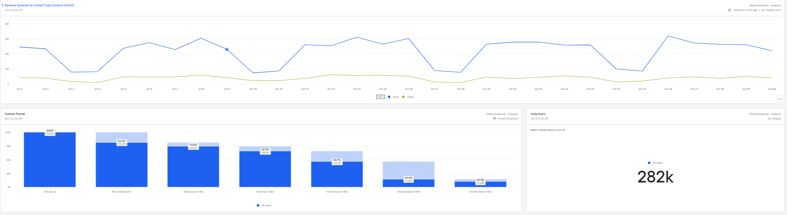
Customer Retention & Cohort Analysis (Amplitude)
Durchführung einer Kohortenanalyse zur Messung der Retentionsraten über verschiedene Zeiträume. Darstellung des Kundenlebenszyklus und Erkennung von Faktoren, die die Bindung beeinflussen.
👉 Business Value: Die Analyse zeigte, dass die 7-Tage-Retention bei ca. 42 %, die 30-Tage-Retention bei 28 % lag. Basierend darauf konnten gezielte Massnahmen zur Verbesserung der Kundenbindung eingeführt werden (z. B. Onboarding-Kampagnen).
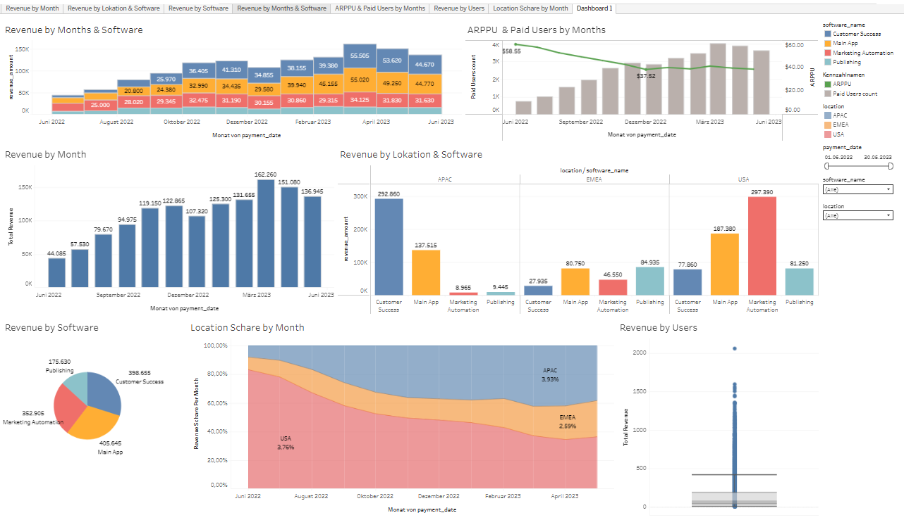
Sales Performance Dashboard (Tableau)
Entwicklung eines interaktiven Dashboards zur Visualisierung von Vertriebs-KPIs. Analyse von Umsatzentwicklungen, Zielerreichung und Segmenten.
👉 Business Value: Das Dashboard ermöglichte dem Management die schnelle Identifizierung von umsatzstarken Segmenten. Durch die verbesserte Transparenz in den KPIs wurde die Zielerreichung um ca. 18 % gesteigert.
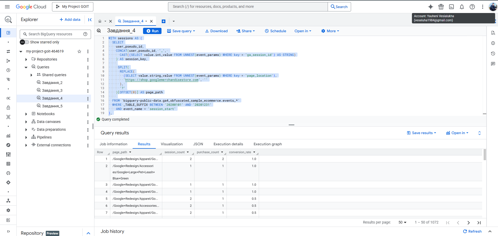
GA4 Conversion Analysis with BigQuery (SQL)
Erstellung von SQL-Abfragen in BigQuery zur Analyse von GA4-Daten. Berechnung von Conversion-Rates und Performance-Indikatoren für Marketingkanäle.
👉 Business Value: Die Analyse zeigte, dass die Top-Marketingkanäle eine Conversion Rate von 4–5 % erreichten, während schwächere Kanäle nur bei 1 % lagen. Durch die Optimierung des Budgets konnte die Gesamt-Conversion um ca. 20 % verbessert werden.
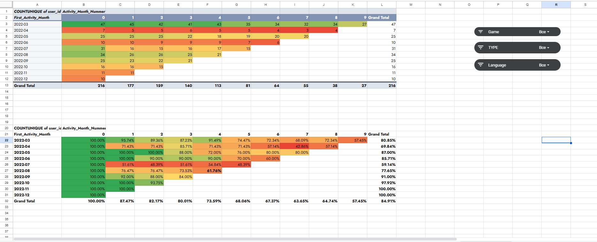
Business Insights Dashboard (Google Sheets)
Aufbereitung von Daten in Google Tabellen mit Formeln, Pivot-Tabellen und Diagrammen. Entwicklung kostengünstiger Dashboards für schnelle Business Insights ohne komplexe BI-Tools.
👉 Business Value: Die Berichtserstellung wurde von mehreren Stunden auf nur 5 Minuten reduziert. Dadurch erhielten Entscheidungsträger jederzeit aktuelle Kennzahlen und konnten schneller reagieren.
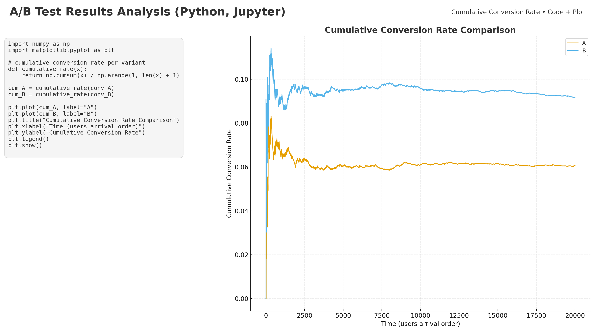
A/B Test Results Analysis (Python, Jupyter)
Data analysis of A/B test results using Python (Pandas, SciPy, Statsmodels). Statistical significance testing, confidence intervals, and business interpretation.
👉 Business Value: The analysis identified that variant B achieved a statistically significant increase in conversion rate (+8.9 % vs. 6.1 %, p < 0.05). Based on the results, scaling the B-version was recommended to improve user conversion and optimize marketing efficiency.
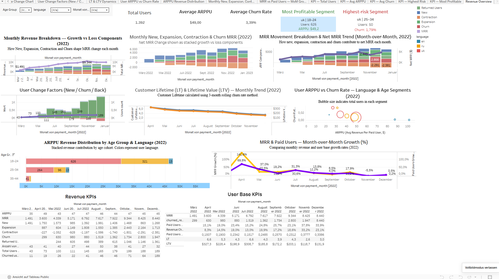
SaaS Revenue Metrics Dashboard (SQL + Tableau)
End-to-end analytics pipeline built with PostgreSQL and Tableau: MRR trends, ARPPU, churn, expansion/contraction MRR, and user-segment monetization. Includes SQL data modeling, segmentation, and a fully interactive BI dashboard.
👉 Business Value: The analysis highlights key growth drivers: the language = 'uk' group (especially ages 18–24) shows the highest ARPPU and is the most profitable user segment, while language = 'uk' ages 25–34 demonstrate the highest churn rate. These insights support targeted retention strategy, pricing optimization, and more accurate revenue planning.
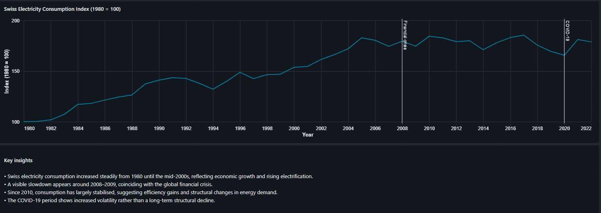
Swiss Electricity Consumption Trends (Databricks SQL)
Interactive time-series analysis of Swiss electricity consumption from 1980 to 2022, built with Databricks SQL and a public dashboard. The project covers absolute consumption (TWh), year-over-year changes, and indexed growth to identify long-term structural patterns in energy demand.
👉 Business Value: The analysis reveals a long phase of sustained growth until the mid-2000s, followed by a prolonged stabilisation period. Short-term shocks such as the global financial crisis (2008–2009) and COVID-19 (2020) increased volatility but did not lead to a long-term decline. These insights support energy demand forecasting, policy evaluation, and infrastructure planning.
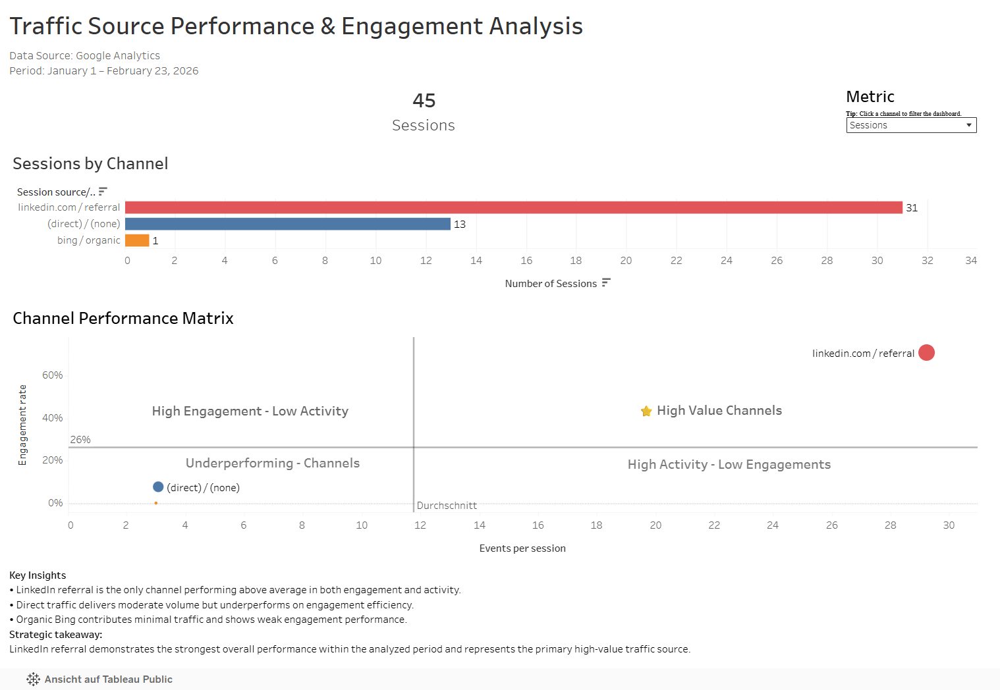
Traffic Source Performance & Engagement Analysis (SQL + Tableau)
End-to-end marketing analytics project analyzing traffic sources using
engagement and activity KPIs.
Built with SQL for data preparation and
Tableau for interactive dashboard visualization.
The project evaluates channel performance based on:
• Sessions
• Engagement Rate
• Events per Session
• Key Events
Includes KPI aggregation, benchmark comparison, and a
dynamic parameter-driven metric selector in Tableau.
A strategic Performance Matrix (Activity vs. Engagement)
identifies high-value and underperforming channels.
👉 Business Value: The analysis revealed that LinkedIn referral is the only channel performing above average in both engagement and activity metrics. Direct traffic generates moderate volume but underperforms in engagement efficiency, while organic Bing contributes minimal impact. These insights support performance-focused budget allocation, channel optimization, and data-driven marketing decisions.
Berufserfahrung
Solartechnik-Installateur — Schmocker Gebäudemanufaktur AG (CH)
03.2023–02.2024 • Herstellung und Montage von Bauelementen und Solarsystemen (3 Mitarbeitende)
- Montage von Solaranlagen auf Flach- und Steildächern inkl. DC-Verkabelung.
- Erfahrung mit Unterkonstruktionen, Solarmodulen und Wechselrichtern.
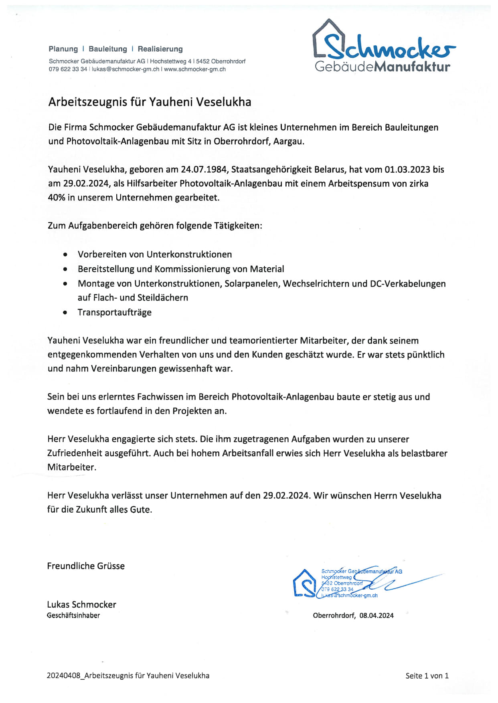
Betriebsmitarbeiter — Obrist Transport + Recycling AG (CH)
06.2022–03.2023 • Transport- und Recyclingdienstleistungen (70+ Mitarbeitende)
- Teilnahme an logistischen und operativen Prozessen zur Sicherstellung eines effizienten Unternehmensbetriebs.
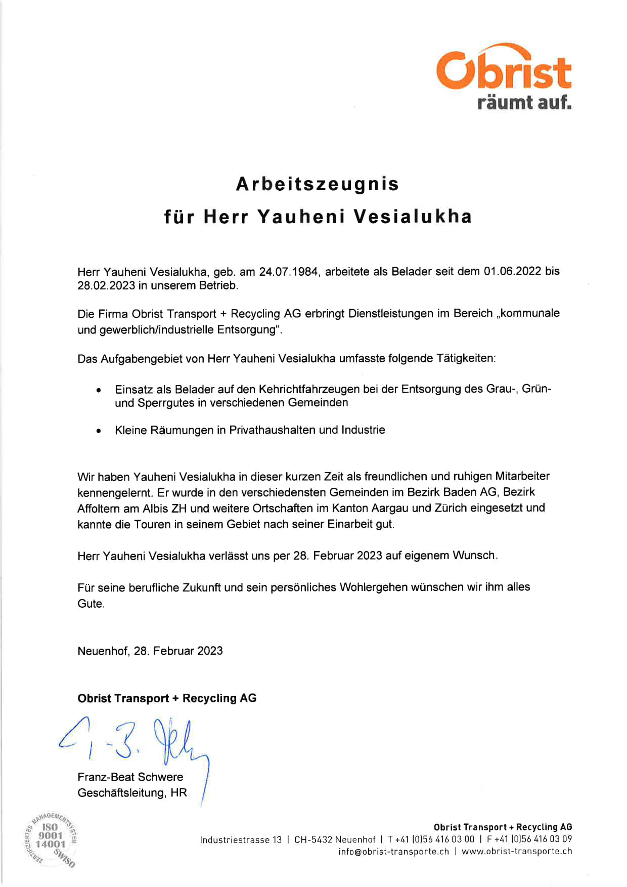
Übersiedlung — Ukraine → Schweiz
04.2022–06.2022 • Übersiedlung aufgrund der Situation in der Ukraine
Regionaler Manager für Risiko- und Prozessmanagement — DIYESA GmbH (UA)
11.2019–06.2022 • Einzelhandel mit Elektronik (300 Mitarbeitende)
- Optimierung von Geschäftsprozessen in Logistik, Sicherheit und Inventur.
- Einführung von Automatisierungen und ERP-Systemverbesserungen zur Effizienzsteigerung.
- Führung von Teams mit Fokus auf Produktivität und Standardkonformität.
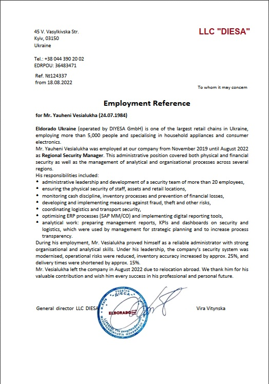
Sicherheitsmitarbeiter / Stellv. Leiter — PrivatBank (UA)
11.2014–11.2019 • Bankwesen und Geldtransporte (50 Mitarbeitende)
- Verantwortlich für die Sicherheit von Filialen, Mitarbeitenden und Geldtransporten.
- Routenplanung, Risikominimierung und Vorfallanalyse.
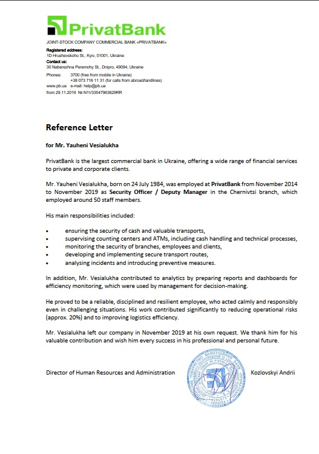
Filialleiter und Sicherheitsmanager — Kalinovskiy Markt GmbH (UA)
11.2012–11.2014 • Lebensmitteleinzelhandel (50 Mitarbeitende)
- Leitung von Filialen mit Fokus auf Personal- und Finanzkontrolle.
- Kostensenkung durch Einführung effizienter Planungs- und Abrechnungssysteme.
Regionsleiter (Rayonvorsteher) — Verwaltung der Region Grodno (BY)
12.2006–11.2012 • Öffentliche Verwaltung (150 Mitarbeitende)
- Technisches und finanzielles Management von Fuhrpark- und Infrastrukturprojekten.
- Effizienzsteigerung durch smarte Planungssysteme und Kostenkontrolle.
Leiter Montageteam — LLC SandySekuritesSystems (BY)
01.2006–12.2006 • Sicherheitssysteme und Installation
- Planung und Umsetzung von Videoüberwachungs-, Zutritts- und Brandmeldesystemen.
- Schulung von Monteuren und Qualitätskontrolle.
Informatiklehrer — Landwirtschaftliche Schule (BY)
06.2003–01.2006 • Bildungseinrichtung
- IT-Unterricht, Organisation praxisnaher Übungen und Prüfung des Lernfortschritts.
Ausbildung
Grodno State Agrarian University — Grodno, Belarus
09.2005–10.2009 • Bachelor in Business Administration (BWL)
- Formal einem schweizerischen universitären Bachelorabschluss gleichgestellt (gemäss swissuniversities).
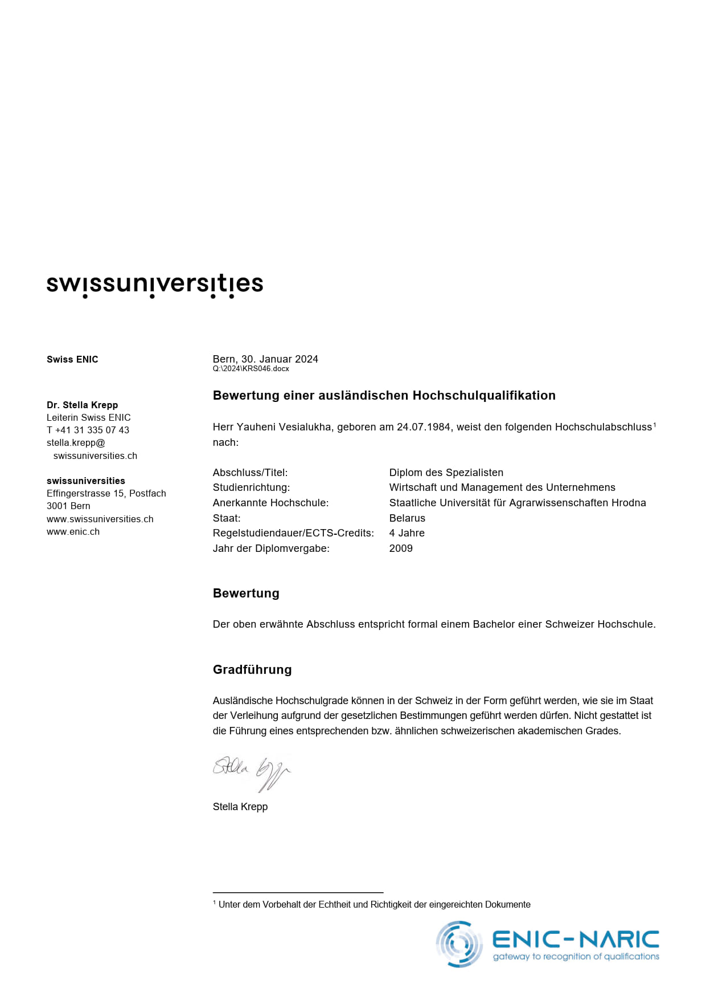
Agricultural College — Novogrudok, Belarus
2003–2007 • Agronomie
- Abschluss mit Qualifikation als Agronom.

Agricultural College — Novogrudok, Belarus
06.2001–06.2003 • Betriebswirtschaft (Handel)
- Diplom mit Auszeichnung.
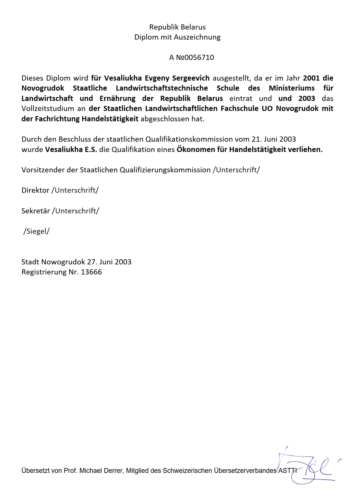
Secondary School — Novogrudok, Belarus
09.1990–05.2001 • Allgemeinbildung
- Abschluss mit Schwerpunkt Automechanik.
Zertifikate

Datenanalyst-Ausbildung — GoIT (Online)
11.2025

Hobbys
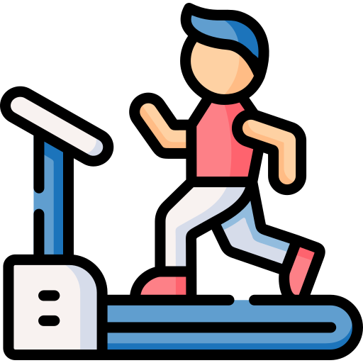
Sport und Fitness